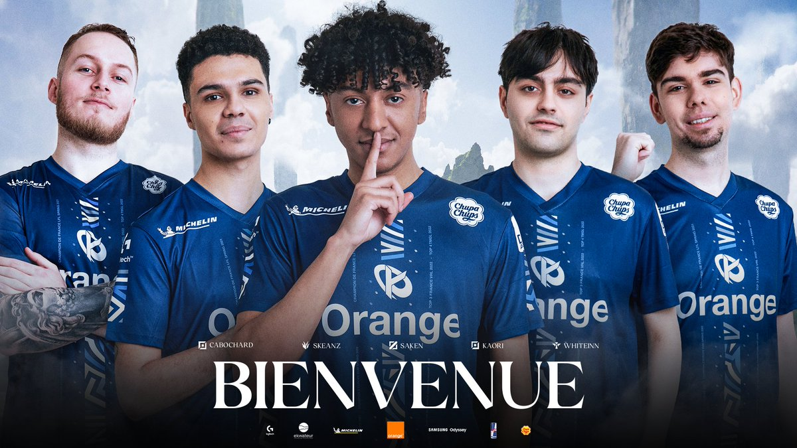
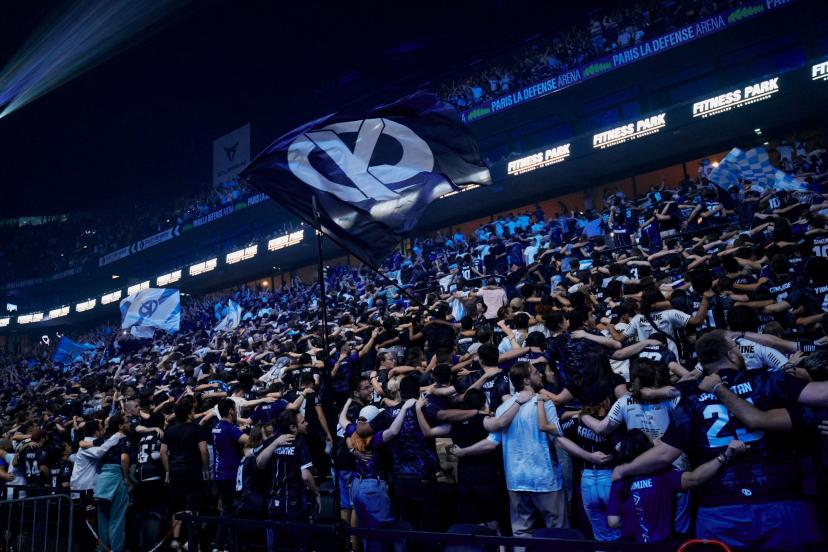

La Karmine Corp s'est rapidement imposée comme leader dans le monde de l'esport en France.
L'équipe vise désormais l'international avec un seul objectif : gagner les championnats du monde sur tous les jeux.

TOUS UNIS DERRIÈRE UNE MÊME BANNIÈRE
Le 30 mars 2020 : Kamel Kebir "Kameto" et Zouhair Darji "Kotei" lancent Kameto Corp, une structure d'esport française.
Puis le 16 novembre 2020 : Amine Mekri "Prime" rejoint l'organisation en tant que cofondateur et directeur général. La structure est alors renommée Karmine Corp.
Depuis sa création, l'organisation a connu une ascension rapide, devenant l'une des structures les plus populaires et performantes de l'esport français et européen.
La Karmine Corp ne cesse de croître et d'élargir ses horizons en ayant toujours pour but de rafler tous les trophées et d'agrandir son palmarès déjà bien fourni.

La Karmine Corp n'est pas qu'une simple organisation, elle réunit à elle seule des dizaines de milliers de fans qui soutiennent la KC.
À l'heure d'aujourd'hui, la KC compte au total 5 jeux où elle souhaite se masteriser, les plus connus étant Valorant et League of Legends.
Au fil des années, la KC a connu une grande croissance médiatique grâce aux réseaux sociaux et aux plateformes de streaming telles que Twitch.
De plus, les casters comme Fugu, Kameto, Heylida, etc. participent à l'accroissement de cette structure, avec une grande communauté réunie dans le même but commun : soutenir une équipe française.

La Karmine Corp a su bien utiliser son influence et mener de bons projets, tels que s'agrandir dans des jeux et placer des équipes dans l'esport.
Alors que c'est un circuit très fermé, surtout pour les petits rosters, grâce à la communauté la Karmine Corp
a su dominer la scène EMEA et donc gagner 1 place pour les VCT. Lors des VCT, la KC a su montrer son niveau malgré une jeune équipe.
Ils ont été éliminés dès le premier tour des éliminatoires, terminant à la 7ᵉ place avec un total de 2 points,
comparé à l'autre équipe française, Gentle Mates, qui a accumulé 1 point au cours de la saison, les plaçant 12ᵉ au classement.